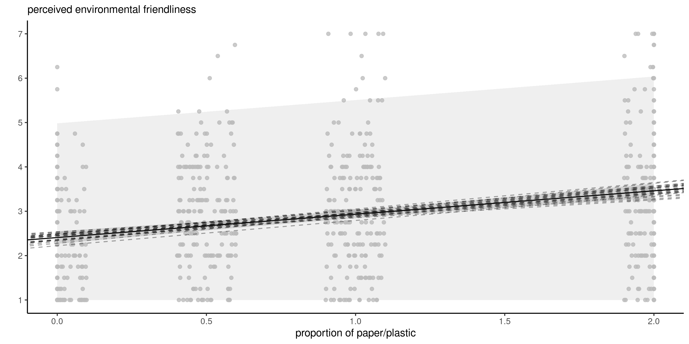
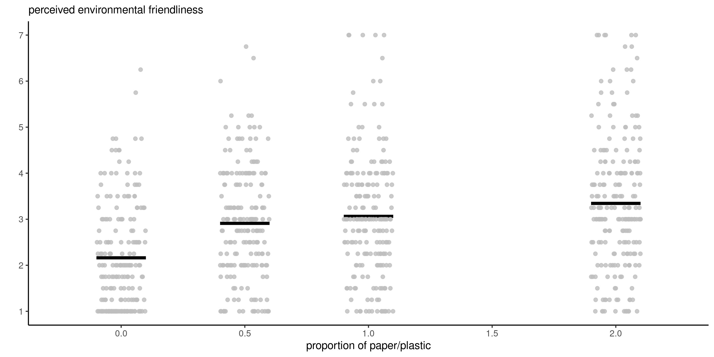

data(SKD23_S2A, package = "hecedsm") # load data
lm_simple <- lm(pef ~ proportion, data = SKD23_S2A) # fit simple linear regression
predict(lm_simple,
newdata = data.frame(proportion = c(0, 0.5, 1, 2)),
interval = "prediction") # prediction intervals
predict(lm_simple,
newdata = data.frame(proportion = c(0, 0.5, 1, 2)),
interval = "confidence") # confidence for meanStatistical modelling
04. Linear models
Léo Belzile, HEC Montréal
2024
Recap of the previous episode
Assuming \(Y_i \sim \mathsf{normal}(\mathbf{x}_i \boldsymbol{\beta}, \sigma^2)\) for \(i=1, \ldots, n\) are independent, we showed that the ordinary least squares (OLS) estimator \[\begin{align*} \widehat{\boldsymbol{\beta}} = \left(\mathbf{X}^\top \mathbf{X}\right)^{-1}\mathbf{X}^\top \boldsymbol{y} \sim \mathsf{normal}\left\{\boldsymbol{\beta}, \sigma^2 (\mathbf{X}^\top\mathbf{X})^{-1}\right\}. \end{align*}\]
- We define the \(i\)th ordinary residual as \(e_i = y_i - \mathbf{x}_i \widehat{\boldsymbol{\beta}}\).
- The sum of squared errors is \(\sum_{i=1}^n e_i^2 = \mathsf{SS}_e\).
- We can show that \(S^2=\mathsf{SS}_e/(n-p-1)\) is an unbiased estimator of the variance \(\sigma^2\).
- More importantly, \(\mathsf{SS}_e \sim \sigma^2 \chi^2_{n-p-1}\) and \(\mathsf{SS}_e\) is independent of \(\widehat{\boldsymbol{\beta}}\).
Prediction
If we want to predict the value of a new observation, say \(Y^*\), with known explanatories \(\mathbf{x}^* = (1, x^*_1, \ldots, x^*_p)\), the prediction of the value will be \(\widehat{y}^* = \mathbf{x}^*\widehat{\boldsymbol{\beta}}\) because \[\begin{align*} \mathsf{E}(\widehat{Y}^* \mid \mathbf{X}, \mathbf{x}^*) = \mathsf{E}(\mathbf{x}^*\widehat{\boldsymbol{\beta}}\mid \mathbf{X}, \mathbf{x}^*) = \mathbf{x}^*\boldsymbol{\beta}. \end{align*}\]
Prediction uncertainty
Individual observations vary more than averages: assuming the new observation is independent of those used to estimate the coefficients, \[\begin{align*} \mathsf{Va}(Y^*-\widehat{Y}^* \mid \mathbf{X}, \mathbf{x}^*) &= \mathsf{Va}(Y^* - \mathbf{x}^*\widehat{\boldsymbol{\beta}} \mid \mathbf{X}, \mathbf{x}^*) \\&=\mathsf{Va}(Y^* \mid \mathbf{X}, \mathbf{x}^*) + \mathsf{Va}(\mathbf{x}^*\widehat{\boldsymbol{\beta}} \mid \mathbf{X}, \mathbf{x}^*) \\& = \sigma^2\mathbf{x}^{*\vphantom{\top}}(\mathbf{X}^\top\mathbf{X})^{-1}\mathbf{x}^{*\top} + \sigma^2, \end{align*}\]
The variability of new predictions is the sum of
- the uncertainty due to the estimators (based on random data) and
- the intrinsic variance of the new observation.
Distribution of predictions
The distribution of \(Y^*\) is \(Y^* \mid \mathbf{x}^* \sim \mathsf{normal}(\mathbf{x}^*\boldsymbol{\beta}, \sigma^2)\).
Using properties of the estimators, we can base the prediction interval on the Student distribution, as \[\begin{align*} \frac{Y^*-\mathbf{x}^*\widehat{\boldsymbol{\beta}}}{\sqrt{S^2\{1+\mathbf{x}^*(\mathbf{X}^\top\mathbf{X})^{-1}\mathbf{x}^{*\top}\}}}\sim \mathsf{Student}(n-p-1). \end{align*}\] where \(S^2=\mathsf{SS}_e/(n-p-1)\) is the unbiased estimator of the variance \(\sigma^2\).
We obtain \(1-\alpha\) prediction interval for \(Y^*\) by inverting the test statistic, \[\begin{align*} \mathbf{x}^*\widehat{\boldsymbol{\beta}}\pm \mathfrak{t}_{n-p-1}(\alpha/2)\sqrt{S^2\{1+\mathbf{x}^*(\mathbf{X}^\top\mathbf{X})^{-1}\mathbf{x}^{*\top}\}}. \end{align*}\]
Inference for the mean
Given a \((p+1)\) row vector of explanatories \(\mathbf{x}\), we can compute a summary \(\mu(\mathbf{x})=\mathbf{x}\boldsymbol{\beta}\).
Similar calculations yield the formula for pointwise confidence intervals for the mean, \[\begin{align*} \mathbf{x}^*\widehat{\boldsymbol{\beta}}\pm \mathfrak{t}_{n-p-1}(\alpha/2)\sqrt{S^2\mathbf{x}^*(\mathbf{X}^\top\mathbf{X})^{-1}\mathbf{x}^{*\top}}. \end{align*}\] The two differ only because of the additional variance of individual observations.
Example
Sokolova, Krishna, and Döring (2023) consider consumer bias when assessing how eco-friendly packages are. They conjecture that, paradoxically, consumers tend to view the packaging as being more eco-friendly when the amount of cardboard or paper surrounding the box is larger, relative to the sole plastic package (e.g., cereal boxes). In Study 2A, they measures
- the perceived environmental friendliness (PEF, variable
pef) as a function of - the
proportionof paper wrapping (either none, half of the area of the plastic, equal or twice).
We fit a simple linear regression of the form \[\texttt{pef} = \beta_0 + \beta_1 \texttt{proportion} + \varepsilon\] with \(\varepsilon \sim \mathsf{normal}(0,\sigma^2)\) and observations are assumed independent.
Prediction for simple linear regression
Figure 1: Mean predictions with prediction intervals (left) and confidence intervals for the mean (right).
Width of intervals
proportion |
prediction | lower | upper |
|---|---|---|---|
| 0.0 | 2.41 | -0.168 | 4.98 |
| 0.5 | 2.67 | 0.097 | 5.24 |
| 1.0 | 2.93 | 0.361 | 5.51 |
| 2.0 | 3.46 | 0.884 | 6.04 |
| mean | lower CI | upper CI |
|---|---|---|
| 2.41 | 2.27 | 2.55 |
| 2.67 | 2.57 | 2.77 |
| 2.93 | 2.84 | 3.02 |
| 3.46 | 3.30 | 3.62 |
Predictions in R
The generic predict takes as input
- a model and
- a
newdataargument containing a data frame with the same structure as the original data - a
type, indicating the scale ("response"for linear models). - an
interval, either"prediction"or"confidence", for objects of classlm.
Tests for linear regression
In linear models, we compare different models (simple versus alternative, or complete models) as before by imposing constraints on the mean coefficient vector \(\boldsymbol{\beta}\).
- Typically, we test for the effect of explanatory variables (i.e., fix the mean coefficients from \(\boldsymbol{\beta}\) corresponding to this variable to \(0\)), equivalent to comparing models with and without the explanatory.
- For continuous or binary variables, this is a single coefficient, say \(\beta_j\).
- For categorical variables with \(K\) levels, there are \(K-1\) coefficients to set simultaneously to zero.
Wald tests in linear regression
The Wald test statistic for the hypothesis \(\mathscr{H}_0: \beta_j=b\) is \[W = \frac{\widehat{\beta}_j - b}{\mathsf{se}(\widehat{\beta}_j)}.\] The Wald test statistic is reported by most software for the hypothesis \(b=0\).
Since \(\mathsf{Var}(\widehat{\beta}_j) = \sigma^2v_{j,j}\), where \(v_{k,l}\) is the \((k,l)\)th element of \((\mathbf{X}^\top\mathbf{X})^{-1}\), we can estimate \(\sigma^2\) from \(S^2\).
The distribution of \(W\) under the null hypothesis is \(\mathsf{Student}(n-p-1)\), hence the terminology \(t\)-values and \(t\)-tests.
Confidence intervals for parameters
Wald-based confidence intervals for \(\beta_j\) are \[\widehat{\beta}_j \pm \mathfrak{t}_{n-p-1,\alpha/2} \mathsf{se}(\widehat{\beta}_j),\] with \(\mathfrak{t}_{n-p-1,\alpha/2}\) denoting the \(1-\alpha/2\) quantile of the \(\mathsf{Student}({n-p-1})\) distribution.
summary(lm_simple)$coefficients # t-tests (Wald) for beta=0 with p-values
## Estimate Std. Error t value Pr(>|t|)
## (Intercept) 2.407 0.0723 33.31 2.56e-153
## proportion 0.526 0.0618 8.51 8.40e-17
confint(lm_simple) # confidence intervals for betas
## 2.5 % 97.5 %
## (Intercept) 2.266 2.549
## proportion 0.405 0.648The test for \(\beta_0=0\) is not of interest, since the response variable ranges from 1 to 7.
Comparison of nested models
Consider the full linear model which contains \(p\) predictors, \[\begin{align*} \mathbb{M}_1: Y=\beta_0+\beta_1 \mathrm{X}_1 + \cdots + \beta_g \mathrm{X}_g + \beta_{k+1}\mathrm{X}_{k+1} + \ldots + \beta_p \mathrm{X}_p + \varepsilon. \end{align*}\] Suppose without loss of generality that we want to test \[\mathscr{H}_0: \beta_{k+1}=\beta_{k+2}=\ldots=\beta_p=0.\] The restricted model corresponding to the null hypothesis contains only the covariates for which \(\beta_j \neq 0\), \[\begin{align*} \mathbb{M}_0: Y=\beta_0+\beta_1 \mathrm{X}_1 + \ldots + \beta_k \mathrm{X}_k + \varepsilon. \end{align*}\]
Sum of square decompositions
Let \(\mathsf{SS}_e(\mathbb{M}_1)\) be the residuals sum of squares for model \(\mathbb{M}_1\), \[\begin{align*} \mathsf{SS}_e(\mathbb{M}_1)=\sum_{i=1}^n (Y_i-\widehat{Y}_i^{\mathbb{M}_1})^2, \end{align*}\] where \(\widehat{Y}_i^{\mathbb{M}_1}\) is the \(i\)th fitted value from \(\mathbb{M}_1\). Similarly define \(\mathsf{SS}_e(\mathbb{M}_0)\) for the residuals sum of square of \(\mathbb{M}_0\).
F-statistic
The \(F\)-test statistic is \[\begin{align*} F=\frac{\{\mathsf{SS}_e(\mathbb{M}_0)-\mathsf{SS}_e(\mathbb{M}_1)\}/(p-k)}{\mathsf{SS}_e(\mathbb{M}_1)/(n-p-1)}. \end{align*}\] Under \(\mathscr{H}_0\), the \(F\) statistic follows a Fisher distribution with \((p-k)\) and \((n-p-1)\) degrees of freedom, \(\mathsf{Fisher}(p-k, n-p-1)\)
- \(p-k\) is the number of restrictions (i.e., the number of additional parameters in \(\mathbb{M}_1\) relative to \(\mathbb{M}_0\)).
- \(n-p-1\) is sample size minus the number of coefficients for the mean of \(\mathbb{M}_1\).
Quid of likelihood ratio tests?
For normal linear regression, the likelihood ratio test for comparing models \(\mathbb{M}_1\) and \(\mathbb{M}_0\) is a function of the sum of squared residuals: the usual formula simplifies to \[\begin{align*} R &= 2( \ell_{\mathbb{M}_1} - \ell_{\mathbb{M}_0}) \\&=n\ln\{\mathsf{SS}_e(\mathbb{M}_0)/\mathsf{SS}_e(\mathbb{M}_1)\}\\ &= n \ln \left( 1+ \frac{p-k}{n-p-1}F\right) \end{align*}\] Both the likelihood ratio test and the \(F\) tests are related via an monotone transformation, so they are equivalent (up to null distribution).
Example 1 - Testing for amount of donations
Moon and VanEpps (2023) considered the impact of providing suggested amounts for donations to a charity (as opposed to an open-ended request).
The test of interest is \(\mathscr{H}_0: \beta_1=0\), where \(\beta_1=\mu_{\texttt{oe}} - \mu_{\texttt{qty}}\) is the mean difference between open-ended amounts and pre-specified amounts for proposals (quantity).
data("MV23_S1", package = "hecedsm")
MV23_S1 <- MV23_S1 |>
dplyr::mutate(amount2 = ifelse(is.na(amount), 0, amount))
linmod_MV23 <- lm(amount2 ~ condition, data = MV23_S1)
# Wald tests with coefficients
summary(linmod_MV23)$coefficients
## Estimate Std. Error t value Pr(>|t|)
## (Intercept) 6.77 0.377 17.95 1.69e-61
## conditionquantity 1.93 0.517 3.73 2.05e-04We reject the null hypothesis \(\beta_1=0\) in favour of the two-sided alternative \(\beta_1 \neq 0\): there is a significant difference in average donations, with participants in quantity giving on average 1.93$ more out of 25$.
F-test versus t-test
Both \(F\) and \(t\)-statistics are equivalent for testing a single coefficient \(\beta_j=b\): the \(F\)-statistic is the square of the Wald statistic and they lead to the same \(p\)-value.
# Wald tests with coefficients
summary(linmod_MV23)$coefficients
## Estimate Std. Error t value Pr(>|t|)
## (Intercept) 6.77 0.377 17.95 1.69e-61
## conditionquantity 1.93 0.517 3.73 2.05e-04
# Analysis of variance table with F tests
anova(linmod_MV23)
## Analysis of Variance Table
##
## Response: amount2
## Df Sum Sq Mean Sq F value Pr(>F)
## condition 1 805 805 13.9 2e-04 ***
## Residuals 867 50214 58
## ---
## Signif. codes: 0 '***' 0.001 '**' 0.01 '*' 0.05 '.' 0.1 ' ' 1Indeed, if \(Z \sim \mathsf{Student}(\nu)\), then \(Z^2 \sim \mathsf{Fisher}(1, \nu)\), it follows that both tests are equivalent.
Example 2 - Testing for linearity
Let \(\mu_{0}, \mu_{0.5}, \mu_{1}, \mu_2\) denote the true mean of the PEF score as a function of the proportion of paper for the data from Sokolova, Krishna, and Döring (2023).
We could compare the linear regression model (in which the PEF score increases linearly with the proportion of paper to plastic) \[\begin{align*} \mathsf{E}(\texttt{pef} \mid \texttt{proportion}) = \beta_0 + \beta_1\texttt{proportion}, \end{align*}\] against the ANOVA which allows each of the four groups to have different means. \[\begin{align*} \mathsf{E}(\texttt{pef} \mid \texttt{proportion}) &= \alpha_0 + \alpha_1 \mathbf{1}_{\texttt{proportion}=0.5} + \alpha_2 \mathbf{1}_{\texttt{proportion}=1}\\& \qquad + \alpha_3\mathbf{1}_{\texttt{proportion}=2}. \end{align*}\]
Parameter constraints
We need to impose the constraints \[\begin{align*} \mu_0 &= \beta_0=\alpha_0 \\ \mu_{0.5} &= \beta_0 + 0.5 \beta_1 = \alpha_0 + \alpha_1\\ \mu_1 &= \beta_0 + \beta_1 = \alpha_0 + \alpha_2 \\ \mu_2 &= \beta_0 + 2 \beta_1= \alpha_0 + \alpha_3. \end{align*}\] The test comparing the simple linear regression with the analysis of variance imposes two simultaneous restrictions, with \(\mathscr{H}_0: \alpha_3 = 2\alpha_2= 4\alpha_1\).
Testing linear restrictions
data(SKD23_S2A, package = "hecedsm") # load data
linmod <- lm(pef ~ proportion, data = SKD23_S2A) # fit simple linear regression
anovamod <- lm(pef ~ factor(proportion), # one-way ANOVA
data = SKD23_S2A)
# Compare simple linear regression with ANOVA via 'anova' call
anova(linmod, anovamod) # is the change in PEF linear?
## Analysis of Variance Table
##
## Model 1: pef ~ proportion
## Model 2: pef ~ factor(proportion)
## Res.Df RSS Df Sum of Sq F Pr(>F)
## 1 800 1373
## 2 798 1343 2 29.3 8.69 0.00018 ***
## ---
## Signif. codes: 0 '***' 0.001 '**' 0.01 '*' 0.05 '.' 0.1 ' ' 1Specifying linear restrictions
# Specifying the linear restriction
car::linearHypothesis(model = anovamod,
hypothesis = rbind(c(0, -2, 1, 0),
c(0, 0, -2, 1)))
## Linear hypothesis test
##
## Hypothesis:
## - 2 factor(proportion)0.5 + factor(proportion)1 = 0
## - 2 factor(proportion)1 + factor(proportion)2 = 0
##
## Model 1: restricted model
## Model 2: pef ~ factor(proportion)
##
## Res.Df RSS Df Sum of Sq F Pr(>F)
## 1 800 1373
## 2 798 1343 2 29.3 8.69 0.00018 ***
## ---
## Signif. codes: 0 '***' 0.001 '**' 0.01 '*' 0.05 '.' 0.1 ' ' 1More tests
Suppose we perform an analysis of variance and the \(F\)-test for the (global) null hypothesis that the averages of all groups are equal leads to \(\mathscr{H}_a\): at least one of the group average is different.
We could be interested in
- comparing different options relative to a control group or
- determine whether specific combinations work better than separately, or
- find the best treatment by comparing all pairs.
If the global \(F\)-test leads to rejection of the null, there exists a contrast which is significant at the same level.
Linear contrasts
A contrast is a linear combination of averages: in plain English, this means we assign a weight to each group average and add them up, and then compare that summary to a postulated value \(a\), typically zero.
If \(c_i\) denotes the weight of group average \(\mu_i\) \((i=1, \ldots, K)\), then we can write \[C = c_1 \mu_1 + \cdots + c_K \mu_K\] with the null hypothesis \(\mathscr{H}_0: C=a\) versus \(\mathscr{H}_a: C \neq a\) for a two-sided alternative.
The weights for linear contrasts (relative to the mean) must sum to zero.
Testing for contrasts
The sample estimate of the linear contrast is obtained by replacing the unknown population average \(\mu_i\) by
- the sample average of that group, \(\widehat{\mu}_i = \overline{y}_{i}\) (no other covariates), or
- the prediction for that group forcing some common value for the other explanatories.
The variance of the contrast estimator assuming subsample size of \(n_1, \ldots, n_K\) and a common variance \(\sigma^2\) is \[\mathsf{Va}(\widehat{C}) = {\sigma}^2\left(\frac{c_1^2}{n_1} + \cdots + \frac{c_K^2}{n_K}\right).\]
We can build a Wald \(t\)-test as usual by replacing \(\sigma^2\) by \(S^2\).
Example 1 - contrasts for reading comprehension methods
The purpose of Baumann, Seifert-Kessell, and Jones (1992) was to make a particular comparison between treatment groups. From the abstract:
The primary quantitative analyses involved two planned orthogonal contrasts—effect of instruction (TA + DRTA vs. 2 x DR) and intensity of instruction (TA vs. DRTA).
With a pre-post model, we will want to compare the means for a common value of pretest1, hereafter taken to be the overall mean of the pretest1 score.
Coding contrasts
library(emmeans) #load package
data(BSJ92, package = "hecedsm")
mod_post <- lm(posttest1 ~ group + pretest1,
data = BSJ92) # change name for package
car::Anova(mod_post, type = 3) # Global F-tests
## Anova Table (Type III tests)
##
## Response: posttest1
## Sum Sq Df F value Pr(>F)
## (Intercept) 1 1 0.25 0.62
## group 143 2 12.17 3.5e-05 ***
## pretest1 275 1 46.67 4.2e-09 ***
## Residuals 365 62
## ---
## Signif. codes: 0 '***' 0.001 '**' 0.01 '*' 0.05 '.' 0.1 ' ' 1The result of the analysis of variance table shows that there are indeed differences between groups.
Estimated marginal means
We can thus look at the estimated marginal means, which are the average of each group (here for pretest1 set to the overall average).
| terms | marg. mean | std. err. | dof | lower (CI) | upper (CI) |
|---|---|---|---|---|---|
| DR | 6.19 | 0.52 | 62 | 5.14 | 7.23 |
| DRTA | 9.81 | 0.52 | 62 | 8.78 | 10.85 |
| TA | 8.22 | 0.52 | 62 | 7.18 | 9.27 |
Weights for first contrast
The hypothesis of Baumann, Seifert-Kessell, and Jones (1992) is \(\mathscr{H}_0: \mu_{\mathrm{TA}} + \mu_{\mathrm{DRTA}} = 2 \mu_{\mathrm{DRA}}\) or, rewritten slightly, \[\begin{align*} \mathscr{H}_0: - 2 \mu_{\mathrm{DR}} + \mu_{\mathrm{DRTA}} + \mu_{\mathrm{TA}} = 0. \end{align*}\] with weights \((-2, 1, 1)\)
- The order of the levels for the treatment are (\(\mathrm{DR}\), \(\mathrm{DRTA}\), \(\mathrm{TA}\)) and it must match that of the coefficients.
- An equivalent formulation is \((2, -1, -1)\) or \((1, -1/2, -1/2)\): in either case, the estimated differences will be different (up to a constant multiple or a sign change).
Weights for the second contrast
The vector of weights for \[\mathscr{H}_0: \mu_{\mathrm{TA}} = \mu_{\mathrm{DRTA}}\] is (\(0\), \(-1\), \(1\)): the zero appears because the first component, \(\mathrm{DR}\) doesn’t appear.
Computing contrasts
# Identify the order of the level of the variables
with(BSJ92, levels(group))
## [1] "DR" "DRTA" "TA"
# DR, DRTA, TA (alphabetical)
contrasts_list <- list(
# Contrasts: linear combination of means, coefficients sum to zero
"C1: average (DRTA+TA) vs DR" = c(-1, 0.5, 0.5),
"C2: DRTA vs TA" = c(0, 1, -1)
)
contrasts_post <-
contrast(object = emmeans_post,
method = contrasts_list)
contrasts_summary_post <- summary(contrasts_post)Conclusions of analysis of contrasts
| contrast | estimate | std. err. | dof | stat | p-value |
|---|---|---|---|---|---|
| C1: average (DRTA+TA) vs DR | 2.83 | 0.64 | 62 | 4.40 | 0.00 |
| C2: DRTA vs TA | 1.59 | 0.73 | 62 | 2.17 | 0.03 |
- The methods involving thinking aloud have a strong impact on reading comprehension relative to only directed reading.
- The evidence is not as strong when we compare the method that combines directed reading-thinking activity and thinking aloud.
Testing for offset
Another potential hypothesis of interest is testing whether the coefficient of pretest1 is one, i.e. whether a model for posttest1-pretest1 would be as good as the linear regression.
This amounts to the Wald test \[w = (\widehat{\beta}_{\texttt{pretest1}}-1)/\mathsf{se}(\widehat{\beta}_{\texttt{pretest1}}).\]
# Extract coefficients and standard errors
beta_pre <- coefficients(mod_post)['pretest1']
se_pre <- sqrt(c(vcov(mod_post)['pretest1', 'pretest1']))
wald <- (beta_pre - 1)/se_pre # Wald statistic, signed version
# P-value based on Student-t distribution, with n-p-1 dof
pval <- 2*pt(abs(wald), df = mod_post$df.residual, lower.tail = FALSE)
# Model comparison via 'anova' call
mod0 <- lm(posttest1 ~ offset(pretest1) + group, data = BSJ92)
# The 'offset' fixes the term and so this is equivalent to a coefficient of 1
aov_tab <- anova(mod0, mod_post)The test statistic is \(-3.024\) and the \(p\)-value is \(0.004\).
Example 2 - contrasts for differences to a reference category
Sokolova, Krishna, and Döring (2023) were interested in comparing none with other choices: we are interested in pairwise differences, but only relative to the reference \(\mu_{0}\): \[\begin{align*} \mu_0 = \mu_{0.5} & \iff 1\mu_0 - 1\mu_{0.5} + 0\mu_{1} + 0 \mu_{2} = 0\\ \mu_0 = \mu_{1} & \iff 1\mu_0 + 0\mu_{0.5} -1\mu_{1} + 0 \mu_{2} = 0\\ \mu_0 = \mu_{2} & \iff 1\mu_0 + 0\mu_{0.5} + 0\mu_{1} -1 \mu_{2} = 0 \end{align*}\] so contrast vectors \((1, -1, 0, 0)\), \((1, 0, -1, 0)\) and \((1, 0, 0, -1)\) for the marginal means would allow one to test the hypothesis.
Raw data
Code for contrasts
anovamod <- lm(pef ~ factor(proportion), data = SKD23_S2A) # one-way ANOVA
margmean <- anovamod |>
emmeans::emmeans(specs = "proportion") # group means
contrastlist <- list( # specify contrast vectors
refvshalf = c(1, -1, 0, 0),
refvsone = c(1, 0, -1, 0),
refvstwo = c(1, 0, 0, -1))
# compute contrasts relative to reference
contrast <- margmean |>
emmeans::contrast(
method = contrastlist)Marginal means
| proportion | marg. mean | std. err. | dof | lower (CI) | upper (CI) |
|---|---|---|---|---|---|
| 0.0 | 2.16 | 0.093 | 798 | 1.98 | 2.34 |
| 0.5 | 2.91 | 0.093 | 798 | 2.73 | 3.09 |
| 1.0 | 3.06 | 0.092 | 798 | 2.88 | 3.24 |
| 2.0 | 3.34 | 0.089 | 798 | 3.17 | 3.52 |
The group averages suggest an increased perceived environmental friendliness as the amount of paper used in the wrapping increases.
Linear contrasts
| contrast | estimate | std. err. | dof | stat | p-value |
|---|---|---|---|---|---|
| refvshalf | -0.75 | 0.13 | 798 | -5.71 | 0 |
| refvsone | -0.90 | 0.13 | 798 | -6.89 | 0 |
| refvstwo | -1.18 | 0.13 | 798 | -9.20 | 0 |
- All groups have significantly different perceived environmental friendliness scores relative to the plastic wrapping.
- The effect isn’t however linearly related to the proportion of paper to plastic.
References

Baumann, James F., Nancy Seifert-Kessell, and Leah A. Jones. 1992. “Effect of Think-Aloud Instruction on Elementary Students’ Comprehension Monitoring Abilities.” Journal of Reading Behavior 24 (2): 143–72. https://doi.org/10.1080/10862969209547770.
Moon, Alice, and Eric M VanEpps. 2023. “Giving Suggestions: Using Quantity Requests to Increase Donations.” Journal of Consumer Research 50 (1): 190–210. https://doi.org/10.1093/jcr/ucac047.
Sokolova, Tatiana, Aradhna Krishna, and Tim Döring. 2023. “Paper Meets Plastic: The Perceived Environmental Friendliness of Product Packaging.” Journal of Consumer Research 50 (3): 468–91. https://doi.org/10.1093/jcr/ucad008.